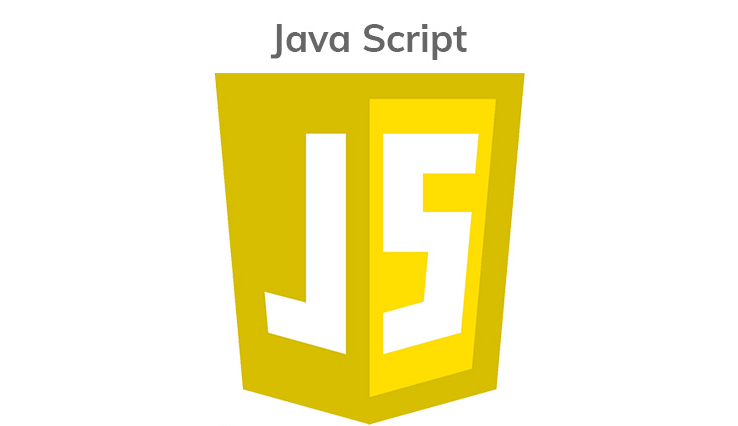

HTML and CSS
One must be proficient with HTML and CSS to work as a web developer. HTML is the language that is used to build web pages. CSS, on the other hand, is used to design the layout, color, fonts, and style of a web page.

JavaScript
JavaScript is a programming language that lets one to add advanced functionality to their website. Knowing JavaScript will assist one to meet higher client demands when it comes to website design.
Git
A version control system can be used by a Web Developer to track, regulate, and revise code changes. Git is an example of a code versioning tool that allows users to find and fix issues rapidly.
Backend Tech
Backend development languages manage the 'behind-the-scenes' functionality of web applications. It's the program that links the web to a database, manages user connections, and runs the web application.
JS Libraries and Frameworks
JavaScript libraries contain pre-written functions that can be used by an application to complete a task and make programming easier. The JavaScript framework is a JavaScript application framework that enables programmers to edit and use functions.
Testing and Debugging
Debugging is the process of locating and correcting bugs, flaws, and other anomalies in a code. Debugging takes up around 33% of a software developer's time.